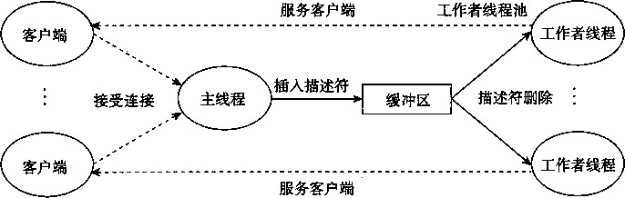
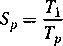
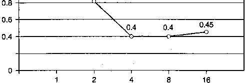
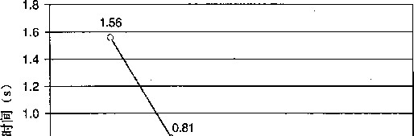

(jitter),而这种抖动是由各个帧的编码和解码时与数据相关的差异引起的。缓冲区为生产者提供 了一个槽位池,而为消费者提供一个已编码的帧池。另一个常见的示例是图形用户接口设计。生 产者检测到鼠标和键盘事件，并将它们插入到缓冲区中。消费者以某种基于优先级的方式从缓冲 区取出这些事件，并显示在屏幕上。
在本节中，我们将开发一个简单的包，叫做SBUF,用来构造生产者-消费者程序。在下 一节里，我们会看到如何用它来构造一个基于预线程化 （ prethreading)的有趣的并发服务器。 SBUF操作类型为sbuf_t的有限缓冲区（见图12-24)。项目存放在一个动态分配的《项整数数 组（buf)中。front g rear索引值记录该数组中的第一项和最后一项。三个信号量同步对缓 冲区的访问。mutex信号量提供互斥的缓冲区访问。slots和items信号量分别记录空槽位和 可用项目的数量。
code/conc/sbuf.h
|
1 |
typedef struct { |
|
|
2 |
int *buf; |
/* |
|
3 |
int n; |
/* |
|
A |
int front; |
h |
|
5 |
int rear; |
/* |
|
6 |
sem_t mutex; |
/* |
|
7 |
sem 一 t slots; |
/* |
|
8 |
sem_t items; |
/* |
code/conc/sbuf.h
图 12-24 sbuf t ： SBUF 包使用的有限缓冲区
图12-25给出了 SBUF函数的实现。sbuf_init函数为缓冲区分配堆存储器，设置front 和rear表示一个空的缓冲区，并为三个信号i赋初始值。这个函数在调用其他三个函数中的任 何一个之前调用一次。sbuf_deinit函数是当应用程序使用完缓冲区时，释放缓冲区存储的。 sbuf一insert函数等待一个可用的槽位，对互斥锁加锁，添加项目，对互斥锁解锁，然后宣布 有一个新项目可用。sbuf一remove函数是与sbuf_insert函数对称的。在等待一个可用的缓 冲区项目之后，对互斥锁加锁，从缓冲区的前面取该项目，对互斥锁解锁，然后发信号通知一 个新的槽位可供使用。
code/conc/sbuf. c
#include
#include
'csapp.h" 'sbuf.h"
/* Create an empty, bounded, shared FIFO buffer with n slots */ void sbuf_init(sbuf*sp, int n)
/*
/*
h
/*
/*
sp->buf = Calloc(n, sizeof(int))
sp_>n = n;
sp->front = sp->rear = 0;
Sem一init (&sp->nurtex, 0,:
Sem^init(&sp->slots, 0, n)
Sem_init(&sp->items, 0,(
Buffer holds max of n items */
Empty buffer iff front == rear */ Binary semaphore for locking 氺/ Initially, buf has n empty slots */ Initially, buf has zero data items */
A
/* Glean up buffer sp +/
图 12-25 SBUF ：同步对有限缓冲区并发访问的包 www.TopSage.com
16
17
18
19
21 22 23 2A
25
26
27
28
29
30
31
32
33
34
35
36
37
38
39
40
41
P(&sp->slots);
P(&sp->mutex);
sp->buf[(++sp->rear)%(sp->n)] V(&sp->mutex);
V(&sp->items);
/* Wait for available item /* Lock the buffer */
/* Remove the item 木 /
/* Unlock the buffer */
/* Announce. available slot
*/
int item;
P(&sp->items);
P(&sp->mutex);
item = sp->buf[(++sp->front)%(sp->n)]; V(&sp->mutex);
V(&sp->slots); return item;
/* Wait for available slot */ /* Lock the buffer 木 / item; /* Insert the item */
Unlock the buffer */
/本 Announce availa.ble item */
/* Remove and return the first item from buffer sp */ int sbuf_remove(sbuf_t *sp)
/* Insert item onto the rear of shared buffer sp */ void sbuf.insert(sbuf_t *sp, int item)
void sbuf_deinit(sbuf_t *sp) Free(sp->buf);
>
_ code/conc/sbuf.c
图 12-25 (续）
fi练习题12.9设p表示生产者数量，c表示消费者数量，而”表示以项目单元为单位的缓冲区大小。 对于下面的每个场景，指出sbuf 一 insert和sbuf_remove中的互斥锁信号量是否是必需的。
p = l,c = l,n>l
p = l, c = l, « = 1
/7 > 1 ，C > 1，《 = 1
读者-写者问题
读者-写者问 题是互斥问题的一个概括。一组并发的线程要访问一个共享对象，例如一个 主存中的数据结构，或者一 个磁盘 上的数据库。有些线程只读对象，而其他的线程只修改对象。 修改对象的线程叫做 写者。 只读对象的线程叫做 读者。 写者必须拥有对对象的独占的访问，而读 者可以和无限多个其他的读者共享对象。一般来说，有无限多个并发的读者和写者。
读者-写者交互在现实系统中很常见。例如，一个在线航空预定系统中，允许有无限多个 客户同时查看座位分配，但是正在预订座位的客户必须拥有对数据库的独占的访问。再来看另外 一个例子，在一个多线程缓存Web代理中，无限多个线程可以从共享页面缓存中取出已有的页 面，但是任何向缓存中写入一个新页面的线程必须拥有独占的访问。
读者 一 写者问题有几个变种，每个都是基于读者和写者的优先级的。 第一类读者-写者问 题，读者优先，要求不要让读者等待，除非已经把使用对象的权限赋予了一个写者。换句话说, 读者不会因为有一个写者在等待而等待。 第二类读者 - 写者问题， 写者优先，要求一旦一个写 者准备好可以写，它就会尽可能快地完成它的写操作。同第一类问题不同，在一个写者后到达的 读者必须等待，即使这个写者也是在等待。
图12-26给出了一个对第一类读者-写者问题的解答。同许多同步问题的解答一样，这个解 答很微妙，极具欺骗性地简单。信号量w控制对访问共享对象的临界区的访问。信号量mutex 保护对共享变量readcnt的访问，readcnt统计当前在临界区中的读者数量。每当一个写者 进入临界区时，它对互斥锁w加锁，每当它离开临界区时，对w解锁。这就保证了任意时刻临 界区中最多只有一个写者。另一方面，只有第一个进入临界区的读者对w加锁，而只有最后一 个离开临界区的读者对w解锁。当一个读者进入和离开临界区时，如果还有其他读者在临界;区 中，那么这个读者会忽略互斥锁w。这就意味着只要还有一个读者占用互斥锁w,无限多数量的 读者可以没有障碍地进入临界区。
对这两种读者-写者问题的正确解答可能导 致饥饿 （starvation)，饥饿就是一个线程无限期 地阻塞，无法进展。例如，如图12-26所示的解答中，如果有读者不断地到达，写者就可能无限 期地等待。
®练习题12_10如图12-26所示的对第一类读者-写者问题的解答给予读者较高的优先级，但是从某 种意义上说，这种优先级是很弱的，因为一个离开临界区的写者可能重启一个在等待的写者，而不是 一个在等待的读者。描述出一个场景，其中这种弱优先级会导致一群写者使得一个读者饥饿。
/* Global variables */
int readcnt; /* Initially - 0 */
sem_t mutex, w; /* Both initially = 1 */
void reader(void)
{
while (1) {
P(&mutex); readcnt++;
if (readcnt == 1) /* First in */ P(&w);
V(&mutex);
/* Critical section */
/* Reading happens */
P(&mutex); readcnt--;
if (readcnt == 0) /* Last out */ V(&w);
V(&mutex);
}
>
void writer(void)
-C
while (1) -C P(&w);
/* Critical section */ /* Writing happens */
V(&w);
}
>
图12-26对第一类读者-写者问题的解答。读者优先级髙于写者
其他同步机制
我们已经向你养示了如何利用信号量来同步线程，主要是因为它们简单、经典，并且有一个 清晰的语义模型。但是你应该知道还是存在着其他同步技术的。例如， Java 线程是用一种叫做 Java 监控器（ JavaMonitor) [51] 的机制来同步的，它提供了对信号量互斥和调度能力的更高级 别的抽象；实际上，监控器可以用信号量来实现。再来看一个例子， Pthreads 接口定义了一组对 互斥锁和条件变量的同步操作。 Pthreads 互斥锁被用来实现互斥。条件变量用来调度对共享资源 的访问，例如在一个生产者一消费者程序中的有界缓冲区。
12.5.5综合：基于预线程化的并发服务器
我们已经知道了如何使用信号量来访问共享变量和调度对共享资源的访问。为了帮助你更清 晰地理解这些思想，让我们把它们应用到一个基于称为预线程化（prethreading)技术的并发服 务器上。
在如图 12-14 所示的并发服务器中，我们为每一个新客户端创建了一个新线程。这种方法的 缺点是我们为每一个新客户端创建一个新线程，导致不小的代价。一个基于预线程化的服务器试 图通过使用如图 12-27 所示的生产者 - 消费者模型来降低这种开销。服务器是由一个主线程和 一组工作者线程构成的。主线程不断地接受来自客户端的连接请求，并将得到的连接描述符放在 一个有限缓冲区中。每一个工作者线程反复地从共享缓冲区中取出描述符，为客户端服务，然后 等待下一个描述符。

图12-27预线程化的并发服务器的组织结构。一组现有的线程不断地取出和处理来自有限缓冲区的已 连接描述符
图12-28显示了我们怎样用SBUF包来实现一个预线程化的并发echo服务器。在初始化了 缓冲区sbuf (第23行）后，主线程创建了一组工作者线程（第26〜27行)。然后它进入了无 限的服务器循环，接受连接请求，并将得到的已连接描述符插入到缓冲区sbuf中。每个工作者 线程的行为都非常简单。它等待直到它能从缓冲区中取出一个已连接描述符（第39行)，然后调 用echo一cnt函数回送客户端的输入。
code/conc/echoservert_pre.c
] #include "csapp.h"
#include "sbuf.h"
#define NTHREADS 4
#define SBUFSIZE 16
5
void echo_cnt(int connfd);
void *thread(void *vargp);
8
sbuf_t sbuf ;卜 Shared buffer of connected descriptors */
•
int main(int argc, char **argv)
{ ,
int i, listenfd, connfd, port;
socklen_t clientlen^sizeof(struct sockaddr_in);
struct sockaddr_in clientaddr;
pthread_t tid;
图12-28 —个预线程化的并发echo服务器。这个服务器使用的是有一个生产者和多个消费者的生产 者-消费者模型
17
if (argc != 2) ■[
fprintf(stderr, "usage: %s <port>\n", argv[0]);
exit(0);
>
port = atoi(argv[1]);
sbuf^init(&sbuf, SBUFSIZE);
listenfd = Open_listenfd(port);
25
for (i = 0; i < NTHREADS ; i++) /* Create worker threads */
Pthread.create(fetid, NULL, thread, NULL);
•
while (1) -C
connfd = Accept(listenfd, (SA *) &clientaddr, ftclientlen);
sbuf_insert(&sbuf, Connfd); /* Insert connfd in buffer */
>
>
34
void *thread(void *vargp)
-[
17 Pthread_detach(pthread_self ());
while (1) ■[
int connfd = sbuf_remove(&sbuf); /* Remove connfd from buffer */
echo_cnt(connfd); /* Service client */
Close(connfd);
>
>
code/conc/echoservert_pre.c
图 12-28 (续）
如图12-29所示的函数echo—cnt是图11-21中的echo函数的一个版本，它在全局变量 byte一cut中记录了从所有客户接收到的累计字节数。这是一段值得研究的有趣代码，因为 它向你展示了一个从线程例程调用的初始化程序包的一般技术。在这种情况下 ， 我们需要初始 化byte一cnt •计数器和mutex信号量。一种‘方法是我们为SBUF和RIO程序包使用过的，它 要求主€程显式地调用一个初始化函数。另外一种方法 ， 在此显示的，是当第一次有某个线程 调用echo一cnt函数时，使用pthread一once函数（第19行）去调用初始化函数。这个方法 的优点是它使程序包的使用更加容易。种方法的缺点是每一次调用echo一cnt都会导致调用 pthread—once函数, • 而在很多时候它没有做什么有用的事。
■ code/conc/echojcnt. c
#include "csapp.h"
•
static int byte_cnt; /* Byte coxinter */
static sem_t mutex; /* and the mutex that protects it */
.
static void init_echo_cnt(void)
{
Sem_init(ftmutex, 0, 1);
byte_cnt = 0;
10 }
ri .
void echo_cnt(int connfd)
char buf[MAXLINE]; rio_t rio;
static pthread_once_t once = PTHREAD_ONCE_INIT;
Pthread_once(&once , init_echo_cnt);
20
21
22
23
24
25
Rio_readinitb(&rio , connfd);
while ( (n = Rio_readlineb (&rio, buf, MAXLINE)) != 0) •[
P(&mutex); byte_cnt += n;
printf("thread %d received %d (%d total) bytes on fd %d\n" ,
(int) pthread_self(), n, byte_cnt, connfd);
V(femutex);
27
29
Rio_writen(connfd, buf, n);
>
； code/conc/echo 一 cnt,c
图 12-29 (续）
一旦程序包被初始化，echo 一 cnt函数会初始化RIO带缓冲区的I/O包（第20行)，然后 回送从客户端接收到的每一个文^行。注意，在第23〜25行中对共享变量byte_cnt的访问 是被P和F操作保护的。
基于线程的事件驱动程序
I/O多路复用不是编写事件驱动程序的唯一方法。例如，你可能已经注意到我们刚才开发的 并发的预线程化的服务器实际上是一个事件驱动服务器，带有主线程和工作者线程的简单状态 机。主线程有两种状态（“等待连接请求”和“等待可用的缓冲区槽位”)、两个I/O事件（“连接 请求到达”和“缓冲区槽位变为可用”）和两个转换（“接受连接请求”和“插入缓冲区项目”)。 类似地，每个工作者线程有一个状态（“等待可用的缓冲项目”)、一个I/O事件（“缓冲区项目变 为可用”）和一个转换（“取出缓冲区项目”)。
12.6 使用线程提高并行性
到目前为止，在对并发的研究中，我们都假设并发线程是在单处理器系统上执行的。然而， 许多现代机器具有多核处理器。并发程序通常在这样的机器上运行得更快 ， 因为操作系统内核 在多个核上并行地调度这些并发线程，而不是在单个核上顺序地调度。在像繁忙的Web服务器、 数据库服务器和大型科学计算代码这样的应用中利用这种并行性是至关重要的，而且在像Web 浏览器、电子表格处理程序和文档处理程序这样的主流应用中，并行性也变得越来越有用。
图12-30给出了顺序、并发和并行程序之间的集合关系：所有程序的集合能够划分成不相交 的顺序程序集合和并发程序的集合。写顺序程序只有一条逻辑流。写并发程序有多条并发流。并 行程序是一个运行在多个处理器上的并发程序。因此，并行程序的集合是并发程序集合的真子集。 ‘
并行程序的详细处理超出了本书讨论的范围 ， 但是研究一个非常简单的示例程序能够帮助你 理解并行编程的一些重要的方面。例如，考虑我们如何并行地对一列整数0,…，1求和。当 然，对于这个特殊的问题 ， 有闭合形式表达式的解答（译者注：即有现成的公式来计算它，即和 等于-1)/2),但是尽管如此，它是一个简洁和易于理解的示例，能让我们对并行程序做一些
有趣的说明。
最直接的方法是将序列划分成/个不相交的区域，然后给/个不同的线程每个分配一个区 域。为了简单，假设《是/的倍数，这样每个区域有《々个元素。主线程创建/个对等线程，每 个对等线程并行地运行在它自己的处理器的核上，并计算如仏是区域灸中元素的和。一旦对 等线程计算完毕，主线程通过把每个&都加起来，计算出最终的结果。
所有的程序
图 12-31 给出了我们会如何实现这个简单的并行求和算法。在第 27 〜 32 行，主线程创建 对等线程，然后等待它们结束。注意，主线程传递给 每个对等线程一个小整数，作为唯一的线程 ID 。每个 对等线程会用它的线程 ID 来决定它应该计算序列的哪 一部分。这个向对等线程传递一个小的唯一的线程 ID 的思想是一项通用技术，许多并行应用中都用到了它。
在对等线程终止后， psmn 向暈包含着每个对等线程计 算出来的部分和。然后主线程对向量 psum 的元素求 和（第 35 〜 36 行 ) ，并且使用闭合形式解答来验证结图 12-30 顺序、并发和并行程序集合之间 果（第 39 〜 40 行）。 的关系
： ： — code/conc/psum. c
#include "csapp.h"
#define MAXTHREADS 32
3
void *sum(void *vargp);
5
/* Global shared variables */
long psum[MAXTHREADS]; /* Partial sum computed by each thread */
long nelems_per_thread; /* Number of elements summed by each thread */
.
int main(int argc, char **argv)
{
long i, nelems, log_nelems, nthreads, result = 0;
pthread_t tid[MAXTHREADS];
int myid[MAXTHREADS];
15
/* Get input arguments */
if (argc != 3) {
printf("Usage: %s 〈nthreads〉 <log_nelems>\n", argv[0]);
exit(0);
}
nthreads = atoi(argv[1]);
log_nelems = atoi(argv[2]);
nelems = (IL << log_nelems);
nelems_per_thread = nelems / nthreads;
. .
卜 Create peer threads and wait for them to finish */
for (i = 0; i < nthreads; i++) {
myid [i] = i;
Pthread_create(&tid[i], NULL, sum, &myid[i]);
}
for (i = 0; i < nthreads; i++)
Pthread_join(tid[i], NULL);
33
/* Add up the partial suras computed by each thread */ for (i = 0; i < nthreads; i++) result += psum [i];
34
35
36
37
38
39
40
/* Check final answer */ if (result != (nelems * (nelems-1))/2)
printf("Error: result=%ld\n", result);
'exit(O);
}
code/conc/psum. c
图 12-31 (续）
图12-32给出了每个对等线程执行的函数。在第3行中，线程从线程参数中提取出线程ID, 然后用这个ID来决定它要计算序列的哪个区域（第4〜5行)。在第8〜10行中，线程在它的 那部分序列上操作，然后更新部分和向量中它的条目（第11行)。注意，我们很小心地给了每 个对等线程一个唯一的存储位置来更新，因此就不需要用信号量互斥锁来同步对psum数组的访 问。在这种特殊的情况下 ， 唯一需要同步的是主线程必须等待每个子线程结束，这样它就知道 psum中的每个条目都是有效的了。
code/conc/psum. c
void *sum(void *vargp)
int myid = *((int *)vargp); /* Extract the thread ID */
long start 二 myid * nelems_per_thread; /* Start element index */ long end = start + nelems_per_thread ; /* End element index 氺 /
long i, sum = 0;
for (i = start; i < end; i++) { sum += i;
>
psum[myid] = sum;
2
3
4
5
6
7
8
9
10
11
12
return NULL;
>
code/conc/psum. c
图12-32图12-31中程序的线程例程
图12-33给出了如图12-31所示程序的总的运行时间，它是一个线程个数的函数。在每种情 况下，程序运行在一个有四个处理器核的系统上，对一个《=2 31 个元素的序列求和。我们看到， 随着线程数的增加，运行时间下降 ， 直到增加到四个线程 ， 此时，运行时间趋于平稳，甚至开始 有点增加。在最理想的情况下，我们会期望运行时间随着核数的增加线性地下降。也就是说，我 们会期望线程数每增加一倍 ， 运行时间就下降一半。确实是这样，直到到达 〖 >4的时候 ， 四个 核中的每一个都忙于运行至少一个线程。随着线程数量的增加 ， 运行时间实际上增加了一点，这 是由于在一个核上多个线程上下文切换的开销。由于这个原因 ， 并行程序常常被写为每个核上只 运行一个线程。
虽然绝对运行时间是衡量程序性能的终极标准，但是还是有一些有用的相对衡量标准，称 为加速比和效率，它们能够说明并行程序有多好地利用了潜在的并行性。并行程序的 加速比 (speedup)通常定义为

0.2


这里 p 是处理器核的数量， 7 ；是在 A 个核上的运行时间。这个公式有时称为 强扩展 （strong scaling ) 0 当是程序顺序执行版本的执行 时间时 ， 义 称 为绝对加速比 （absolute speedup )。 当 是程序并行版本在一个核上的执行 时间时， \称 为相对加速比 （relative speedup )。 绝对加速 比比相对加速比能更真实地衡量并行的好处。即使是当并行程序在一个处理器上运行时，也常常 会受到同步开销的影响 , 而这些开销会人为地增加相对加速比的数值，因为它们使分子增大了。 另一方面，绝对加速比比相对加速比更难以测量，因为测量绝对加速比需要程序的两种不同的版 本。对于复杂的并行代码，创建一个独立的顺序版本可能不太实际，或者因为代码太复杂，或者 因为源代码不可得。
线程
图 12-33 图 12-31 中程序在有四个核的多核机器上的性能。对有 2 31 个元素的序列求和 一种相关的测量称 为效率（ efficiency), 定义为
Ep a
P P PT P
源常表示为范围在 (0, 100] 之间的百分比。效率是对由于并行化造成的开销的衡量。具有高 效率的程序比效率低的程序在有用的工作上花费更多的时间，在同步和通信上花费更少的时间。
图 12-34 给出了我们并行求和示例程序的各个加速比和效率测量值。像这样超过 90 %的效 率是非常好的，但是不要被欺骗了。能取得这么高的效率是因为我们的问题非常容易并行化。在 实际中，很少会这样。数十年来 , 并行编程一直是一个很活跃的研究领域。随着商用多核机器的 出现，这些机器的核数每几年就翻一番，并行编程会继续是一个深入、困难而活跃的研究领域。
线程(/) |
1 |
2 |
4 |
8 |
16 |
核(户) |
1 |
2 |
4 |
4 |
4 |
运行时间（2；) |
1.56 |
0.81 |
0.40 |
0.40 |
0.45 |
加速比 iS p ) |
1 |
1.9 |
3.9 |
3.9 |
3.5 |
效率（尽） |
100% |
95% |
98% |
98% |
88% |
面 12-34 图 12-33 中执行时间的加速比和并行效率
加速比还有另外一面，称为 弱扩展 (weak scaling), 在增加处理器数量的同时，增加问题的 规模，这样随着处理器数量的增加，每个处理器执行的工作量保持不变。在这种描述中，加速比
和效率被表达为单位时间完成的工作总量。例如，如果我们将处理器数量翻倍，同时每个小时也 做了两倍的工作量，那么我们就有线性的加速比和100%的效率。
弱扩展常常是比强扩展更真实的测量值，因为它更准确地反映了我们用更大的机器做更多的 工作的愿望。对于科学计算程序来说尤其如此，科学计算问题的规模很容易增加，更大的问题规 模直接就意味着更好的预测。不过，还是有一些应用的规模不那么容易增加，对于这样的应用， 强扩展是更合适的。例如，实时信号处理应用所执行的工作量常常是由产生信号的物理传感器的 属性决定的。改变工作总量需要用不同的物理传感器，这不太实际或者不太必要。对于这类应 用，我们通常想要用并行来尽可能快地完成定量的工作。
_练习题 12.11 对于下表中的并行程序，填写空白处。假设使用强扩展。
线程(/) |
1 |
2 |
4 |
核（P) |
1 |
2 |
4 |
运行时间（ip |
12 |
8 |
6 |
加速比 (S ) |
1.5 |
||
效率（V |
100 % |
50% |
12.7 其他并发问题
你可能已经注意到了，一旦我们要求同步对共享数据的访问，那么事情就变得复杂得多了。 迄今为止，我们已经看到了用于互斥和生产者-消费者同步的技术，但这仅仅是冰山一角。同 步从根本上说是很难的问题，它引出了在普通的顺序程序中不会出现的问题。这一小节是关于你 在写并发程序时需要注意的一些问题的（决不是完整的）综述。为了让事情具体化，我们将以线 程为例描述我们的讨论。不过要记住，这些典型问题是任何类型的并发流操作共享资源时都会出 现的。
12.7.1线程安全
当用线程编写程序时，我们必须小心地编写那些具有称 为线程安全性 (thread safety)属性 的函数。一个函数被称 为线程安全的 （thread-safe),当且仅当被多个并发线程反复地调用时，它 会一直产生正确的结果 。如果 一个函数不是线程安 全的， 我们就说它是 线程不安全的 （thread- unsafe)。
我们能够定义出四个（不相交的）线程不安全函数类：
第 1 类：不保护共享变量的 属 数。 我们在图12-16中的thread函数中就已经遇到过这样的 问题，该函数对一个未受保护的全局计数器变量加1。将这类线程不安全函数变成线程安全的， 相对而言比较容易：利用像P和F操作这样的同步操作来保护共享的变量。这个方法的优点是 在调用程序中不需要做任何修改。缺点是同步操作将减慢程序的执行时间。
第 2 类：保持跨越多个调用的状态的函数。 一个伪随机数生成器是这类线程不安全函数的简 单例子。请参考图12-35中的伪随机数生成器程序包。rand函数是线程不安全的，因为当前调 用的结果依赖于前次调用的中间结果。当调用srand为rand设置了一个种子后，我们从一个 单线程中反复地调用rand,能够预期得到一个可重复的随机数字序列。然而，如果多线程调用 rand函数，这种假设就不再成立了。
使得像rand这样的函数线程安全的唯一方式是重写它，使得它不再使用任何static数 据，而是依靠调用者在参数中传递状态信息。这样做的缺点是，程序员现在还要被迫修改调用程 序中的代码。在一个大的程序中，可能有成百上千个不同的调用位置，做这样的修改将是非常麻 烦的，而且容易出错。
code/conc/rand. c
unsigned int. next = 1;
'
/* rand - return pseudo-random integer on 0..32767 */
int rand(void)
{
next = next*1103515245 + 12345;
return (unsigned int)(next/65536) % 32768;
B >
9
■10 /* sra.nd - set seed for randO */
void srand(unsigned int seed)
{
next = seed;
}
code/conc/rand. c
图12-35 —个线程不安全的伪随机数生成器[58]
第 3类： 返回指向静态变量的指针的函数。 某些函数，例如ctime和gethostbyname,将计 算结果放在一个static变量中 ， 然后返回一个指向这个变量的指针。如果我们从并发线程中调用 这些函数，那么将可能发生灾难 ， 因为正在被一个线程使用的结果会被另一个线程悄悄地覆盖了。
有两种方法来处理这类线程不安全函数。一种选择是重写函数，使得调用者传递存放结果的 变量的地址。这就消除了所有共享数据，但是它要求程序员能够修改函数的源代码。
如果线程不安全函数是难以修改或不可能修改的（例如 ， 代码非常复杂或是没有源代码可 用），那么另外一种选择就是使 用加锁 -拷贝（lock-and-copy)技术。基本思想是将线程不安全 函数与互斥锁联系起来。在每一个调用位置，对互斥锁加锁，调用线程不安全函数 ， 将函数返回 的结果拷贝到一个私有的存储器位置，然后对互斥锁解锁。为了尽可能地减少对调用者的修改 , 你应该定义一个线程安全的包装函数，它执行加锁-拷贝，然后通过调用这个包装函数来取代 所有对线程不安全函数的调用。例如，图12-36给出了 ctime的一个线程安全的版本，利用的 就是加锁-拷贝技术。
第4类：调用线程不安全函数的函数。如果函数/调用线程不安全函数 g , 那么/就是线程 不安全的吗？不一定。如果g是第2类函数 ， 即依赖于跨越多次调用的状态，那么/也是线程不 安全的 ， 而且除了重写g以外，没有什么办法。然而，如果g是第1类或者第3类函数 ， 那么只 要你用一个互斥锁保护调用位置和任何得到的共享数据，/仍然可能是线程安全的。在图12-36 中我们看到了一个这种情况很好的示例，其中我们使用加锁-拷贝编写了一个线程安全函数， 它调用了一个线程不安全的函数。
' ; code/conc/ctime_ts. c
char *ctime_ts(const time_t *timep, char *privatep)
..2 i
char *sharedp;
A
P(femutex);
sharedp = ctime(timep);
strcpy(privatep, sharedp); /* Copy string from shared to private 氺/
V(femutex);
return privatep;
:10 }
code/conc/ctime_ts. c
图12-36 C标准库函数ctime的的包装函数。使用力口锁一拷贝技术调用一^第3类雛不安全函数
12.7.2 可重入性
图 12-37 可重入函数、线程安全函数和线 程不安全函数之间的集合关系
所有的函数
C. j
.气:减稱全級
有一类重要的线程安全函数 ， 叫 做可重入函数 （reentrant fimction),其特点在于它们具有这 样一种属性：当它们被多个线程调用时，不会引用 任何共享数据。 尽管线程安全和可重入 有时会（不 正确地）被用做同义词 ， 但是它们之间还是有清晰 的技术差别的，值得留意。图12-37展示了可重入 函数、线程安全函数和线程不安全函数之间的集合 关系。所有函数的集合被划分成不相交的线程安全 和线程不安全函数集合。可重入函数集合是线程安 全函数的一个真子集。
可重入函数通常要比不可重入的线程安全的函 数高效一些，因为它们不需要同步操作。更进一步来说 ， 将第2类线程不安全函数转化为线 程安全函数的唯一方法就是重写它 ， 使之变为可重入的。例如，图12-38展示了图12-35中 rand函数的一个可重入的版本。关键思想是我们用一个调用者传递进来的指针取代了静态的 next变量。
: code/conc/rand_r. c
/* rand„_r - a reentrant pseudo-random integer on 0. .32767 */
int rand^r (unsigned int *nextp)
{
A *nextp = *nextp * 1103515245 + 12345;
return (unsigned int)C*nextp / 65536) % 32768;
}
— code/conc/rand—r.c
图 12-38 rand_r ： 图 12-35 中的 rand 函数的可重入版本
检查某个函数的代码并先验地断定它是可重入的 ， 这可能吗？不幸的是，不一定能这样。如 果所有的函数参数都是传值传递的（即没有指针)，并且所有的数据引用都是本地的自动栈变量 (即没有引用静态或全局变量 ）， 那么函数就是 显式可重入的 （explidtly reentrant),也就是说， 无论它是被如何调用的，我们都可以断言它是可重入的。
然而，如果把我们的假设放宽松一点，允许显式可重入函数中的一些参数是引甩传递的（即 我们允许它们传递指针），那么我们就得到了一个 隐式可重入的 （implicitly reentrant)函数，也 就是说 ， 如果调用线程小心地传递指向非共享数据的指针，那么它是可重入的。例如，图12-38 中的rand_r函数就是隐式可重入的。
我们总是使用术语可 重入的 （reentrant)既包括显式可重人函数也包括隐式可重人函数。然 而，认识到可重人性有时既是调用者也是被调用者的属性，并不只是被调用者单独的属性是非常 重要的。
_练习题12.12图12-36中的ctime_ts函数是线程安全的，但不是可重入的。请解释说明。
在线程化的程序中使用已存在^!库函数
大多数Unix函数，包括定义在标准C库中的函数（例如malloc、free、realloc、 printf和scanf)都是线程安全的，只有一小部分是例外。图12-39列出了常见的例外。（参 考[109]可以得到一个完整的列表。）asctime、ctime和localtime函数是在不同时间和 数据格式间相互来回转换时经常使用的函数。gethostbyname、gethostbyaddr和inet一
ntoa函数是我们在第11章中遇到过的、经常使用的网络编程函数。strtok函数是一个过时了 的（不再鼓励使用的）用来分析字符串的函数。
线程不安全函数 |
线程不安全类 |
Unix线程安全版本 |
rand |
2 |
rand_r |
strtok |
2 |
strtok_r |
asctime |
3 |
asctime_r |
ctime |
3 |
ctime_r |
gethostbyaddr |
3 |
gethostbyaddr_r |
gethostbyname |
3 |
gethostbyname_r |
inet_ntoa |
3 |
(无） |
localtime |
3 |
localtime_r |
图12-39常见的线程不安全的库函数
除了 rand和strtok以外，所有这些线程不安全函数都是第3类的，它们返回一个指向静 态变量的指针。如果我们需要在一个线程化的程序中调用这些函数中的某一个，调用者来说最 不惹麻烦的方法是加锁-拷贝。然而，加锁-拷贝方法有许多缺点。首先，额外的同步降低了 程序的速度。其次，像gethostbyname这样的函数返回指向复杂结构的结构的指针，要拷贝 整个结构层次，需要深 层拷贝 （deep copy)结构。再次，加锁-拷贝方法对像rand这样依赖 跨越调用的静态状态的第2类函数并不有效。
因此，Unix系统提供大多数线程不安全函数的可重入版本。可重入版本的名字总是以“一r” 后缀结尾。例如，gethostbyname的可重入版本就叫做gethostbyname_r。我们建议尽可 能地使用这些函数。
12.7.4竞争
当一个程序的正确性依赖于一个线程要在另一个线程到达^点之前到达它的控制流中的 x点时，就会发 生竞争 （race)。通常发生竞争是因为程序员假定线程将按照某种特殊的轨迹 线穿过执行状态空间，而忘记了另一条准则规定：线程化的程序必须对任何可行的轨迹线都 正确工作。
例子是理解竞争本质的最简单的方法。让我们来看看图12-40中的简单程序。主线程创建了 四个对等线程，并传递一个指向一个唯一的整数ID的指针到每个线程。每个对等线程拷贝它的 参数中传递的ID到一个局部变量中（第21行)，然后输出一个包含这个ID的信息。它看上去 足够简单，但是当在系统上运行这个程序时，我们得到以下不正确的结果：
unix> ./race «
Hello from thread 1
Hello from thread 3
Hello from thread 2
Hello from thread 3
问题是由每个对等线程和主线程之间的竞争引起的。你能发现这个竞争吗？下面是发生的情 况。当主线程在第12行创建了一个对等线程，它传递了一个指向本地栈变量f的指针。在此时， 竞争出现在下一次在第12行调用 P thread_creat e 和第21行参数的间接引用和赋值之间。如 果对等线程在主线程执行第12行之前就执行了第21行，那么myid变量就得到正确的ID。否 则，它包含的就是其他线程的 ID 。令人惊慌的是，我们是否得到正确的答案依赖于内核是如何 调度线程的执行的。在我们的系统中它失败了，但是在其他系统中，它可能就能正确工作，让程 序员 “ 幸福地 ” 察觉不到程序的严重错误。